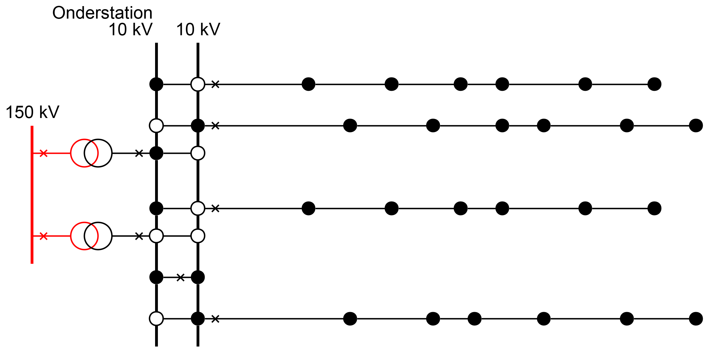

Hoofdstuk 2 behandelt de netten en hun structuren. Eerst komen de verschillen tussen transport en distributie aan de orde. Ook de stations worden in dit hoofdstuk besproken. De structuren van de meeste in Nederland toegepaste midden- en laagspanningsnetten worden toegelicht. Het hoofdstuk besluit met de beschrijving van de aansluitingen voor de diverse aansluitcategorieën.
Het doel van een elektriciteitsnet is elektrisch vermogen te transporteren van de locaties waar het wordt opgewekt naar de locaties waar het wordt gebruikt. Dit doel wordt verwezenlijkt op maatschappelijk verantwoorde wijze, met de gewenste kwaliteit en tegen zo laag mogelijke kosten. Naast de kwaliteit wordt de leveringszekerheid als zeer belangrijk ervaren, vanwege het grote maatschappelijke belang van de elektriciteitsvoorziening. Door de goede reputatie van de elektriciteitsbedrijven gaat men ervan uit dat de leveringszekerheid voldoende is. Absolute leveringszekerheid is echter niet mogelijk, want componenten kunnen altijd gestoord raken, hetzij door een eigen defect, hetzij door een externe oorzaak. Een mogelijkheid om storingen te beheersen is het inbouwen van voldoende reserve. Omdat dit gepaard gaat met extra kosten, zal er altijd een afweging gemaakt worden tussen de kosten en de baten van de leveringszekerheid. Bij een optimale leveringszekerheid wordt niet gestreefd naar minimaliseren van risico en gevolgen maar naar het verkrijgen van een aanvaardbaar niveau. Samenvattend zijn de belangrijkste eisen voor elektriciteitsnetten (Kundur, 1994):
Het begrip ‘net’ is in de Elektriciteitswet 1998 gedefinieerd in artikel 1, sub i. Het komt erop neer dat een elektriciteitsnet het geheel van bedrijfsmiddelen (‘verbindingen en hulpmiddelen’) is, waarmee alle producenten en verbruikers van elektrische energie zijn verbonden en waarmee de elektrische energie wordt getransporteerd. De definitie sluit verbindingen en hulpmiddelen uit die binnen de installatie van een producent of van een afnemer liggen. Om het verschil met particuliere netten aan te duiden, wordt bij het begrip ‘net’ ook wel gesproken over een ‘openbaar net’.
De bedrijfsmiddelen zijn de primaire componenten, die gebruikt worden in het primaire proces van de elektriciteitsvoorziening. Daarnaast bestaan de
secundaire systemen en componenten, die het primaire proces ondersteunen. Een voorbeeld van een secundair systeem is het beveiligingssysteem (besproken in
hoofdstuk 6). De primaire componenten van de technische infrastructuur hebben een lange levensduur van 20 tot 40 jaar of langer. De investeringen in de
infrastructuur zijn hoog, zodat er relatief weinig wijzigingen plaatsvinden. Een nieuw elektriciteitsnet wordt meestal geprojecteerd voor een lange
termijn.
Het elektriciteitsnet verzorgt het transport van elektrische energie vanaf internationaal niveau tot aan het lokale niveau bij de individuele aangeslotenen (de zogenaamde kleinverbruikers). Om dit mogelijk te maken zijn alle elektriciteitsnetten op lokaal, regionaal en landelijk niveau met elkaar verbonden tot een gekoppeld elektriciteitsvoorzieningsysteem. In dit systeem wordt onderscheid gemaakt tussen de transportfunctie en de distributiefunctie. Het transportnet verzorgt op landelijk niveau de vermogenstransporten. Ook de verbindingen met de netten van de omringende landen behoren tot het transportnet. De elektriciteitscentrales en de voedingspunten van de distributienetten zijn op het transportnet aangesloten. In de Elektriciteitswet 1998 wordt het transportnet in artikel 10 beschreven als het ‘landelijk hoogspanningsnet’. Een distributienet verdeelt de elektrische energie binnen een regio over alle aangeslotenen. De distributienetten zijn meer vertakt dan de transportnetten en kunnen worden gezien als de ‘haarvaten’ van het elektriciteitsvoorzieningsysteem. In de praktijk worden de transport- en distributiefunctie nader onderverdeeld. Er wordt gesproken over het koppelnet, het transportnet en het distributienet op regionaal en op lokaal niveau. Dit is schematisch weergegeven in figuur 2.1.

Met het naar buiten toe toenemen van de omvang van de ringen en de hoeveelheid van de aangeslotenen illustreert figuur 2.1 dat de regionale en lokale distributienetten in hun totaliteit (qua omvang) groter zijn dan de transportnetten.
Tabel 2.1 geeft een overzicht van de soorten productie-eenheden en aangeslotenen die op de hierboven genoemde netten zijn aangesloten. De in de tabel genoemde waarden van vermogens zijn indicatief. De kolom ‘Vermogen per net’ geeft aan welke ordegrootte van vermogenstransporten in de genoemde netten voorkomen.
|
Net |
Productie-eenheden |
Aangeslotenen |
Vermogen per net |
|
Koppelnet |
Centrale (>500 MW) |
> 1000 MW |
|
|
Transportnet |
Centrale (10-500 MW) Grote WKK (>10 MW) Windpark (>10 MW) |
Grote industrie met evt. eigen opwekking (>10 MW) |
> 100 MW |
|
Distributienet, regionaal |
Middelgrote WKK
Windturbine (0,3-10 MW) |
Grootverbruiker
|
< 100 MW |
|
Distributienet, lokaal |
micro-WKK (<0,3 MW) PV-systemen (<0,3 MW) |
MKB (<0,3 MW) Huishoudens |
< 1 MW |
De functie heeft een relatie met het spanningsniveau, omdat bij een hoog spanningsniveau een groter vermogen getransporteerd kan worden dan bij een laag spanningsniveau. Als gevolg hebben de hoogspanningsnetten altijd een transportfunctie en de laagspanningsnetten altijd een distributiefunctie. Bovendien is het laagspanningsniveau praktisch en veilig voor het aansluiten van de installaties van de klanten. Tussen de hoog- en laagspanningsniveaus is een overgangsgebied van de transport- naar de distributiefunctie. Het overgangsgebied betreft het middenspanningsniveau. De middenspanningsnetten hebben meestal een distributiefunctie, maar hebben soms ook een transportfunctie. Ondanks deze onduidelijkheid worden de elektriciteitsnetten meestal aangeduid met hun spanningsniveau. Figuur 2.2 geeft een overzicht van de in Nederland toegepaste spanningsniveaus en transformatiestappen. Dit is een overzicht van standaard spanningen. Door innovaties kunnen langzamerhand in de spanningsniveaus en transformatiestappen meerdere varianten ontstaan. Een voorbeeld wordt getoond in figuur 2.10.
Het hoogspanningsniveau met spanningen van 110 tot en met 380 kV is met een rode kleur aangegeven. Het koppelnet is uitgevoerd voor de spanningsniveaus van 220 en 380 kV en de transportnetten voor de spanningsniveaus van 110 en 150 kV. Het koppelnet en de transportnetten worden beheerd door de landelijk netwerk beheerder (LNB). De netten van lagere spanningsniveaus worden beheerd door de regionale netbeheerders (RNB). De grens tussen het net van de landelijk netwerk beheerder (LNB) en de netten van de regionale netbeheerders (RNB) ligt op de primaire transformatorklemmen.
Het tussenspanningsniveau met spanningen van 25 tot en met 50 kV is met een groene kleur aangegeven. De netten op deze spanningsniveaus hebben een transportfunctie.
Het middenspanningsniveau met spanningen van 10 tot en met 20 kV is met een zwarte kleur aangegeven. Sporadisch komen ook nog spanningen van 3 en 6 kV voor maar die worden niet meer toegepast in nieuwe netten.
Het laagspanningsniveau met een spanning van 400 V is met een blauwe kleur aangegeven.
De netten van verschillende spanningsniveaus zijn met behulp van transformatorstations onderling gekoppeld. Om een indruk te krijgen van de omvang van de netten op de verschillende spanningsniveaus kan gekeken worden naar de transportcapaciteit. De capaciteit van de transformatorstations tussen het koppelnet en de transportnetten is meer dan 500 MVA. In het koppelnet zijn enkele tientallen van deze stations. De capaciteit van een transformatorstation tussen het transportnet en het distributienet, van hoogspanning naar middenspanning, ligt in de ordegrootte van 100 MVA. Hiervan zijn er ongeveer 200 in Nederland. De capaciteit van een transformatorstation tussen het middenspannings- en laagspanningsniveau ligt in de ordegrootte van 0,2 tot 1 MVA.
Ook de afstand tussen de stations op de verschillende spanningsniveaus geeft een indruk van de omvang van de netten. De afstand tussen twee stations in het koppelnet is 35-50 km. De gemiddelde afstand tussen twee stations in het hoogspanningsnet is 15 km (Kling, 1999). De gemiddelde afstand tussen twee stations in het middenspanningsnet is ongeveer 500 m. Er kunnen 250 tot 500 netstations op een onderstation zijn aangesloten. Een netstation verzorgt via het laagspanningsnet de aansluiting van 50 tot 250 aangeslotenen, meestal industrie en woningen.
Tabel 2.2 geeft een beeld van de omvang van de transport- en distributienetten in Nederland en is ontleend aan Netbeheer Nederland (Netbeheer, 2010). Hierin is te zien dat in 2009 bijna alle verbindingen van het hoogste spanningsniveau bovengronds zijn uitgevoerd en dat bijna het gehele distributienet ondergronds is uitgevoerd. Ook is goed te zien dat de omvang van het totale distributienet ongeveer 20 maal zo groot is als het koppelnet en het transportnet.
|
Functie |
Niveau |
Bovengronds (km) |
Ondergronds (km) |
|
Koppelnet |
Hoogspanning
|
2682 |
3 |
|
Transportnet |
Hoogspanning
|
5492 |
3760 |
Distributie, regionaal |
Middenspanning
|
0 |
101965 |
Distributie, lokaal |
Laagspanning
|
174 |
145165 |
De regionale en lokale netten tot aan de meterkast van de aangeslotenen worden beheerd door regionale netwerk beheerders (RNB). Het jaarverslag van Alliander (2009) geeft een voorbeeld van de omvang van de netten op de diverse spanningsniveaus van een grote RNB:
De netten op het middenspanningsniveau en het laagspanningsniveau zijn het meest vertakt en daardoor in omvang het grootst. Om die reden is de aandacht in
dit boek vooral gericht op de Nederlandse midden- en laagspanningsnetten en het optimale netontwerp ervan.
In de elektriciteitswet is geregeld aan welke kwaliteitseisen een aansluiting moet voldoen. Onder kwaliteit worden de beschikbaarheid en de kwaliteit van de spanning en de stroom verstaan. De kwaliteit van de spanning en de stroom voor aangeslotenen op de distributienetten is in detail geregeld in de internationale norm IEC 50160 en wordt verder behandeld in hoofdstuk 11 over ‘Power Quality’. De beschikbaarheid van de levering volgt uit de betrouwbaarheid van het elektriciteitsnet en wordt behandeld in hoofdstuk 12. De beschikbaarheid wordt gekarakteriseerd door het aantal onderbrekingen per jaar, de gemiddelde onderbrekingsduur en de gemiddelde jaarlijkse onderbrekingsduur. Bij het ontwerp van een elektriciteitsnet wordt erop gelet dat de gevolgen van een storing in een bedrijfsmiddel, door een eigen defect of een externe oorzaak, voor de beschikbaarheid van de levering zo klein mogelijk zijn. Zo zal bij een kortsluiting het gestoorde bedrijfsmiddel direct moeten worden afgeschakeld. Het hangt af van de functie of het spanningsniveau van het net of alleen het bedrijfsmiddel zelf of een gedeelte van het net wordt afgeschakeld. Met het oog op de beschikbaarheid is redundantie in het elektriciteitsnet aanwezig. De mate van redundantie hangt af van het ontwerp en de bedrijfsvoering en is het resultaat van een kosten/batenafweging. In de transportnetten is het aantal storingen dat leidt tot een onderbreking door de hoge mate van redundantie zeer klein. Er is veel redundantie aanwezig omdat bij elke onderbreking zeer veel aangeslotenen getroffen worden. Zo leidt bijvoorbeeld de onderbreking van een onderstation, dat 500 netstations voedt met ieder gemiddeld 50 aangeslotenen, tot een onderbreking van in totaal 25000 aangeslotenen. In de distributienetten is minder redundantie ingebouwd, zodat een kortsluiting meestal zal leiden tot een onderbreking in een deel van het net. In de middenspanningsdistributienetten is bij een kortsluiting het aantal getroffen aangeslotenen in de ordegrootte van 1000 en wordt de levering redelijk snel hersteld door omschakelacties, waarbij gebruik wordt gemaakt van de redundantie in de transportcapaciteit van de overige verbindingen. In de laagspanningsnetten is het aantal getroffenen meestal niet meer dan enkele tientallen en is geen redundantie aanwezig. Men moet wachten op reparatie of een noodstroomvoorziening.
Bij het beoordelen van de beschikbaarheid en de benodigde redundantie wordt meestal gekeken naar de ‘Enkelvoudige storing’. Dit is de uitval van een productie-eenheid of een willekeurig element in het elektriciteitsvoorzieningsysteem. De NMa hanteert ten aanzien van de bedrijfszekerheid het begrip ‘Enkelvoudige storingsreserve’ (EVSR): de toestand van een net waarin de normale bedrijfstoestand blijft gehandhaafd wanneer een enkelvoudige storing optreedt (Begrippenlijst, 2009). Voor het beschrijven van de bedrijfszekerheid zijn dan onderstaande vier gradaties gedefinieerd:
Een transportnet verplaatst grote elektrische vermogens over lange afstanden. Omdat de gevolgen van een onderbreking van de energielevering bij toenemend spanningsniveau in omvang toenemen en daarmee al snel als onaanvaardbaar worden ervaren, worden transportnetten ontworpen en bedreven met ‘enkelvoudige storingsreserve zonder energieonderbreking’ (n-1). Ook tijdens onderhoud aan primaire objecten uit het transportnet moet er sprake zijn van deze enkelvoudige storingsreserve. Slechts in bijzondere situaties mag soms sprake zijn van bedrijfsvoering met een kans op een energieonderbreking ten gevolge van een storing.
Hoogspanningsnetten
Transport vindt voornamelijk plaats via hoogspanningsnetten, waarvan de spanning vaak hoger is dan de opgewekte of afgenomen spanning. Doordat de netten op nationaal en internationaal niveau met elkaar gekoppeld zijn, verkrijgt men een stabiel transportnet met een hoge bedrijfszekerheid. De internationale connectie maakt het mogelijk om energie uit te wisselen tussen verschillende landen. De elektriciteitcentrales worden op het hoogspanningsnet aangesloten. Dit geldt ook voor grote decentrale opwekkers, zoals clusters van warmte/krachtcentrales en windmolenparken. De regionale tussenspannings- of middenspanningsnetten en grote industriële netten zijn via transformatoren aan het hoogspanningsnet gekoppeld. De meest voorkomende spanningsniveaus zijn:
Tussenspanningsnetten
Een tussenspanningsnet transporteert relatief grote elektrische vermogens (ordegrootte 50 tot 100 MVA) vanuit het hoogspanningsnet naar voedingspunten voor middenspanningsnetten. Het tussenspanningsnet is een schakel tussen de hoog- en middenspanningsnetten maar wordt niet altijd toegepast. Veel voorkomende spanningsniveaus zijn 25 kV en 50 kV. Vanwege de hoge eisen aan de leveringszekerheid heeft het TS-transportnet veelal een enkelvoudige storingsreserve zonder energie onderbreking. Enkelvoudige storingreserve met energie onderbreking kan echter ook voorkomen.
Middenspanningstransportnetten
Een MS-transportnet brengt een vermogen groter dan 5 MVA over vanuit een onderstation naar een station verder in het net. Zo een station wordt een
schakelstation genoemd. Als de afstand van het onderstation naar het schakelstation te groot is, wordt, afhankelijk van de grootte van het
transportvermogen, in het schakelstation een regeltransformator geplaatst en wijzigt de naam van schakelstation in regelstation. In een
middenspanningstransportnet wordt geen spanning getransformeerd naar laagspanningsniveau. Vanwege de hoge eisen aan de bedrijfszekerheid bestaat het
transportnet uit parallel geschakelde kabels met voldoende reserve capaciteit, die zodanig beveiligd zijn, dat het uitvallen van één kabel de energie
levering niet onderbreekt (een enkelvoudige storingsreserve zonder energie onderbreking).
Een distributienet verspreidt het elektrische vermogen van het onderstation, regelstation of schakelstation naar de aangeslotenen (de uiteindelijke afnemers). Hierbij wordt de spanning (in verschillende stappen) omgezet naar het niveau dat uiteindelijk benodigd is. De laatste transformatiestap tussen middenspanning en laagspanning vindt plaats in het netstation, van waaruit de laagspanningskabels naar de aangeslotenen vetrekken. Lange tijd verspreidde het distributienetwerk het elektrische vermogen enkel vanaf het onderstation, regelstation, schakelstation of netstation naar de klanten. Nu leidt decentrale opwekking, zoals windmolens, WKK’s, micro-WKK’s en zonnepanelen, mogelijk tot teruglevering naar het distributienet, waarna er sprake is van elektriciteitsdistributie in twee richtingen.
Middenspanningsdistributienetten
Deze netten distribueren vanuit de hoog- en tussenspanningsnetten het gevraagde elektrische vermogen naar netstations waar transformatie plaatsvindt naar de laagspanningsnetten. De middenspanningsdistributienetten zijn ontworpen voor spanningsniveaus tussen 1 kV en 25 kV. Het meest gebruikte spanningniveau is 10 kV. Recente ontwikkelingen, met name vanwege de toename van grote concentraties van decentrale opwekking of belasting, zijn de oorzaak dat netten op een hoger spanningsniveau zoals 20 kV kunnen worden ontworpen. Het voordeel van dit spanningsniveau is dat de techniek en de prijs van de commercieel verkrijgbare bedrijfsmiddelen niet veel verschilt van die op 10 kV-niveau, terwijl het dubbele vermogen overgebracht kan worden.
Het MS-distributienet is meestal als een ring aangelegd. In normaal bedrijf is deze ring niet gesloten. Hierdoor heeft het net een enkelvoudige storingsreserve met energie onderbreking. De energielevering kan meestal door omschakelen en soms alleen met behulp van een aggregaat worden hersteld.
Laagspanningsdistributienetten
De MS/LS-netstations voeden de laagspanningsdistributienetten, die het elektrische vermogen voor de meeste aangeslotenen verdelen. De laagspanningsnetten zijn ontworpen voor spanningsniveaus tot 1 kV. Het meest gebruikte spanningsniveau is 400 V met een fasespanning van 230 V.
Het laagspanningsnet is meestal zonder schakelmogelijkheden aangelegd en er is dan sprake van ‘geen storingsreserve’. Bij een storing is dan de voorziening
van de aangeslotenen onderbroken. In bijzondere situaties is het net ontworpen voor herstel van de levering, bijvoorbeeld door inzet van een aggregaat. Dit
geldt eveneens voor industriële netten. Afhankelijk van het belang van de continuïteit van de levering kan in het ontwerp rekening worden gehouden met
‘enkelvoudige storingsreserve met energieonderbreking’. De distributienetten in Nederland zijn veelal ook op deze wijze ontworpen.
Een netstructuur is het geheel van verbindingen tussen onderstations, regelstations, schakelstations en netstations. Daarnaast verbindt de structuur deze stations aan de uiteindelijke afnemers. De verbindingen zijn doorgaans ondergrondse kabels. Qua uitvoeringsvorm van de netten wordt onderscheid gemaakt in een radiaal net (of stralennet), een ringnet en een vermaasd net. Deze begrippen worden hierna uitgewerkt, evenals het begrip streng.

Radiaal net
Een radiaal net (ook wel stervormig net of stralennet genoemd) heeft een netstructuur waarbij een afnamepunt via één verbinding het netstation bereikt. Er zijn geen omschakelmogelijkheden. Figuur 2.6 geeft een voorbeeld voor een radiaal MS-net.
Een onderbreking in het radiaal net leidt tot uitval van de levering.

Ringvormig net
In een ringvormig net kan een afnamepunt via twee verbindingen het voedende onderstation, regelstation of schakelstation bereiken. In distributienetten worden ringvormige netten meestal radiaal bedreven. Daartoe wordt de ring ongeveer halverwege geopend, in de zogenaamde netopening. Figuur 2.7 geeft een voorbeeld. Een storing in een verbinding leidt dan tot uitval van de levering en verplaatsing van de netopening herstelt de energieonderbreking. In een ringnet kunnen vertakkingen voorkomen.
Vermaasd net
In een vermaasd net kan een afnamepunt via meer dan twee verbindingen het voedende onderstation, regelstation of schakelstation bereiken. Indien een vermaasd net radiaal wordt bedreven, worden de netopeningen vaak gesitueerd in knooppunten waar meerdere verbindingen samenkomen. Figuur 2.9 geeft een voorbeeld.
Een onderbreking in een verbinding leidt tot uitval van de levering en verplaatsing van de netopening herstelt de energieonderbreking.

Uitloper
In een ringvormig of vermaasd net kan men radiale kabeldelen aantreffen. Deze worden meestal aangeduid met de naam ‘uitlopers‘.
Een onderbreking in een uitloper leidt tot uitval van de levering.
Streng
Een streng is een keten van primaire objecten die met één gemeenschappelijke beveiliging afgeschakeld kunnen worden.
In de volgende paragrafen worden de structuren besproken van transportnetten (HS, TS en MS) en distributienetten (MS en LS). Ook wordt kort ingegaan op een
gecombineerde structuur voor MS-netten met meerdere spanningsniveaus.
Transportnetten zijn meestal zodanig ontworpen dat zij, zelfs in geval van een storing, zonder onderbreking de elektrische energie leveren. Hierbij is sprake van een enkelvoudige storingsreserve zonder energieonderbreking. Het net blijft bij storing van een enkele component goed functioneren en is daarmee n-1 veilig. Het net heeft meerdere wegen van de voedingsbron naar de belastingen. Dit stelt eisen aan de beveiliging, die ervoor moet zorgen dat de gestoorde component direct afgeschakeld wordt, waarbij de elektriciteitsvoorziening zonder onderbreking gehandhaafd blijft. Figuur 2.3 toont een vermaasd 50 kV transportnet met HS-voeding en TS/MS-onderstations. De kleuren geven het spanningsniveau aan (rood: HS; groen: TS; zwart: MS).

In bijzondere situaties komt het voor dat een onderstation aan hoogspanningszijde geen railsysteem bevat maar dat de transportverbindingen van het voedende net rechtstreeks op de hoogspanningszijde van de transformator zijn aangesloten. In deze netten wordt soms toegestaan dat de energielevering wordt onderbroken bij een enkelvoudige storing (zie figuur 2.4). Deze situatie komt zowel op TS- als op HS-niveau voor. Deze configuratie wordt ook wel een ‘transformator op een steeltje’ genoemd.
Op MS-niveau zijn de transportnetten meestal niet vermaasd. Zij bestaan uit twee of meer parallelle kabelverbindingen van een onderstation naar een
schakelstation. In het schakelstation kan een regeltransformator worden toegepast om het spanningsverlies, dat ontstaat doordat een vermogen over een grote
afstand moet worden getransporteerd, te compenseren. De toegepaste spanning is meestal 20 of 10 kV (zie Figuur 2.5).

Het toegepaste spanningsniveau bij middenspanningsdistributienetten is meestal 10 kV. In sommige netten wordt ook 20 kV toegepast. De keuze voor een bepaald spanningsniveau is meestal historisch bepaald. De meeste MS-distributienetten zijn ringvormig of vermaasd aangelegd, maar worden radiaal bedreven. Hieronder worden drie structuren van radiaal bedreven distributienetten toegelicht.
In het onderstation zijn de strengen van het MS-distributienet door middel van een vermogenschakelaar (symbool X in de schema’s) en vervolgens via een lastscheider met het voedende MS-railsysteem van het OS verbonden. Ieder achterliggend netstation in de streng heeft lastscheiders voor de inkomende en de uitgaande kabels.
Het radiale net van figuur 2.6 is de meest eenvoudige uitvoering. In dit net is geen storingsreserve aanwezig. Vanuit het onderstation vertrekken strengen geografisch in alle richtingen van het verzorgingsgebied. Deze uitvoering wordt gebruikt in gebieden met lage concentraties van klanten. De netten zijn daar vaak vrij uitgestrekt. In deze uitvoering zijn er geen mogelijkheden voor omschakelen in geval van een storing. In wezen zijn de strengen uitlopers. Deze bevatten veelal meer netstations dan de uitlopers in ringvormige netten in de stedelijke omgeving. Deze structuur wordt in Nederland niet vaak toegepast.

De meeste distributienetten worden zodanig aangelegd dat de uiteinden van de strengen elkaar ontmoeten en dat een ringvormige structuur ontstaat (zie figuur 2.7). Ergens in de ring wordt een lastscheider geopend (de netopening). Op deze manier ontstaat een radiaal of open bedreven ringvormige structuur. Op de grens van de verzorgingsgebieden van twee onderstations kan ook een verbinding gemaakt worden. De netopening op die plaats wordt dan netscheiding genoemd.

Bij netten met deze structuur wordt vaak gesproken over hoofdring, subring en uitloper. Een hoofdring begint bij het onderstation en loopt via een netopening terug naar het onderstation. De hoofdring bestaat dan uit twee strengen.
Een aftakking van een hoofdring, die aan het uiteinde door het sluiten van een netopening kan worden verbonden met dezelfde voedende kabel, wordt ook wel met de term subring aangeduid.
Een aftakking van een hoofdring of subring, waarvan het uiteinde niet door het sluiten van een netopening kan worden verbonden met een andere voedende kabel, wordt een uitloper genoemd. Deze zijn afgebeeld in figuur 2.8.

In praktijk bevat een hoofdring ongeveer 20 tot 40 netstations. Een subring bevat ongeveer 5 tot 10 netstations. Uitlopers in ringvormige en vermaasde netten bevatten 1 tot 3 netstations. De kabels van subringen en uitlopers hebben meestal een kleinere geleiderdiameter dan de kabels in de hoofdring.
In de ringvormige netten van figuur 2.7 is sprake van een enkelvoudige storingsreserve met storingsonderbreking. Het voordeel van de open bedreven ringvormige structuur is dat in geval van storingen na isolatie van de fout door sluiten van de netopening kan worden omgeschakeld naar een andere streng, zodat de elektriciteitsvoorziening relatief snel kan worden hersteld. Voorwaarde is dat de capaciteit van de strengen toereikend is om het vermogen van een over te nemen streng te voeden.
De ringvormige structuur van figuur 2.7 kan nog verder worden uitgebreid, zodanig dat meerdere strengen vanuit eenzelfde of diverse onderstations elkaar ontmoeten in punten waar netopeningen zijn aangebracht. Op die manier ontstaat een vermaasde structuur, waar in geval van storingen meer omschakelmogelijkheden zijn dan in een net met ringvormige structuur. Het voordeel van deze structuur is dat het vermogen van zwaar belaste delen van het net kan worden verdeeld over meerdere strengen. Met name in grote steden of industriegebieden kan dit wenselijk zijn. Figuur 2.9 illustreert dit.
Het komt bijna nooit voor dat ringvormige of vermaasde distributienetten vermaasd bedreven worden. In vermaasd bedrijf zou een kortsluiting namelijk vanuit meerdere richtingen gevoed kunnen worden. De kortsluitstroom moet dan op twee of meer plaatsen worden uitgeschakeld, hetgeen de beveiliging complex en kostbaar maakt.
In tegenstelling tot de transportnetten zijn de MS-distributienetten met de ringvormige of vermaasde structuur niet geschikt voor n-1 veilige bedrijfsvoering maar alleen voor een enkelvoudige storingsreserve met energieonderbreking. De beveiliging is ontworpen om in geval van een kortsluiting in een van de bedrijfsmiddelen van een streng die gehele streng uit te schakelen.
Hoofdring, subring en uitloper zijn meestal op hun voedingspunt beveiligd. In geval van een enkelvoudige storing zal de streng, waarin zich de gestoorde
component bevindt, in zijn geheel worden afgeschakeld. Indien de storing zich in een beveiligde subring of uitloper bevindt, zal alleen dat gedeelte
selectief worden afgeschakeld. Na het isoleren van de defecte component (door deze vrij te schakelen) en het verplaatsen van de netopeningen kan de
elektriciteitsvoorziening worden hersteld. Het faal- en herstelproces is nader beschreven in hoofdstuk 12 (betrouwbaarheid).
Met de sterke groei van de belasting in stedelijke omgeving wordt gezocht naar methodes om bestaande MS-netten zodanig uit te breiden dat zij voorbereid zijn voor de toekomstige eisen voor energietransport. De te verwachten ontwikkeling van de belasting in de jaren van 2010 tot 2025 omvat:
De mogelijkheden om de bestaande MS-netten in stedelijk gebied uit te breiden zijn in toenemende mate beperkt. Bij het zoeken naar de oplossingsrichting moet ook de flexibiliteit van het distributienet ruime aandacht krijgen. Daarom moeten oplossingen gevonden worden waarmee met weinig extra maatregelen het bestaande net beter benut kan worden. Een mogelijkheid is het creëren van extra steunpunten in het MS-net, die gevoed worden vanuit een vermaasd bedreven MS-transportnet. Hierbij ontstaan kortere radiaal bedreven MS-structuren en nemen de flexibiliteit en de capaciteit toe. Ten opzichte van de traditionele netstructuren omvat de toegenomen flexibiliteit onder andere het sneller aansluiten van nieuwe klanten, het faciliteren van decentrale opwekking en het beter bestand zijn tegen storingen. Storingen moeten ook sneller opgelost kunnen worden dan bij de traditionele netstructuren.
In de te realiseren gecombineerde netstructuur dienen onder meer de volgende zaken mogelijk te zijn:
Het idee over de configuratie van de gecombineerde netstructuur is hierna uitgewerkt. De gecombineerde netstructuur bestaat uit een gesloten transportring en gesloten of open bedreven subringen tussen de stations van de transportring. Dit concept is nieuw en kan in zwaar belaste netten in stedelijke omgeving goed worden toegepast (Karakoc, 2009). Het spanningsniveau van de transportring kan hoger liggen dan dat van de subringen.

Het voorbeeld in figuur 2.10 toont een gesloten ringvormig 20 kV-transportnet (groen) met 6 schakelstations of netstations (MSR 1 t/m MSR 6). Het transportnet is ontworpen op een enkelvoudige storingsreserve zonder energieonderbreking, zodat een van de transportverbindingen buiten bedrijf kan zijn. De beveiliging is vergelijkbaar met die van een MS-transportnet. Het distributiegedeelte wordt gevormd door strengen die telkens tussen twee schakelstations of netstations zijn aangebracht. In deze strengen kunnen al dan niet netopeningen zijn aangebracht. Indien er geen netopeningen zijn aangebracht, zoals in de bovenste twee vermaasde 20 kV-strengen tussen MSR 1 en MSR 2 en tussen MSR 2 en MSR 3 (groen), worden dezelfde eisen aan de beveiliging en vermogenschakelaars gesteld als bij vermaasd bedreven transportnetten. Het transportnet voedt ook vier open bedreven subringen op 10 kV-niveau (zwart).
De flexibiliteit wordt vergroot indien de schakelstations en netstations op afstand kunnen worden bemeten en bestuurd. In dit voorbeeld hebben het 20
kV-transportnet en de 20 kV-subringen een enkelvoudige storingsreserve zonder energieonderbreking. De open bedreven subringen op 10 kV-niveau hebben een
enkelvoudige storingsreserve met energieonderbreking.
Laagspanningsnetten hebben als functie alle klanten met een laagspanningsaansluiting voor vermogens tot 300 kVA (bij 3 fasen, 400 V, maximaal 435 A) op het elektriciteitsnet aan te sluiten. De netopbouw is sterk afhankelijk van de lokale situatie. Laagspanningsnetten zijn in principe vanaf een netstation stervormig aangelegd en hebben meestal geen verbinding met een ander netstation. Er bestaan echter ook situaties van ringvormige en vermaasde structuur.
Figuur 2.11 illustreert de radiale structuur. De netstations zijn aangegeven met dichte vierkanten. Er is sprake van geen storingsreserve. Eventueel kan een generatorwagen worden ingezet om de levering te herstellen.
In oudere stedelijke distributienetten komen soms vermaasde LS-netten voor, die ook vermaasd worden bedreven. Figuur 2.12 geeft een voorbeeld hiervan. Bij deze netten moeten de voedende distributiestations zich in dezelfde MS-streng bevinden.
In het algemeen leidt vermaasd bedrijf tot een betere spanningshuishouding en tot minder netverlies. Een groot nadeel hierbij is dat dit in geval van een
storing leidt tot grotere kortsluitstromen. Er is ook een complexere beveiliging nodig. Er is daarom een trend om nieuwe laagspanningsnetten radiaal aan te
leggen.
In alle netten, op plaatsen waar verbindingen samenkomen of worden opgesplitst en waar transformatie naar een ander spanningsniveau plaatsvindt, komen stations voor. Afhankelijk van de functie van het net en de impact van uitval op de energievoorziening is in het ontwerp veel tot weinig redundantie ingebouwd. Ook de mate van stationsautomatisering en de omvang van de beveiliging hangt af van de functie. De belangrijkste stations zijn onderstation (OS), schakelstation (SS), regelstation (RS) en netstation. Een onderstation wordt gevoed vanuit het HS- of TS-net en voedt een MS-transportnet of MS-distributienet. Een schakelstation en een regelstation worden gevoed vanuit het MS-transportnet en voeden een MS-distributienet. Een netstation wordt gevoed vanuit het MS-distributienet en voedt een LS-net. Deze stations worden in dit hoofdstuk verder behandeld.
Elk station is gebouwd rondom een railsysteem. Een railsysteem bestaat uit drie (voor elke fase één) stevig uitgevoerde, aluminium of koperen geleiders, waarop alle bedrijfsmiddelen van in- en uitgaande verbindingen zijn aangesloten. In open installaties wordt vaak aluminium buizen voor de rails toegepast en in gesloten installaties koperen strips.
Op basis van eisen ten aanzien van bedrijfsvoering, betrouwbaarheid en de kosten voor installatie en onderhoud wordt gekozen uit enkel- en dubbelrailsystemen.
Het enkelrailsysteem, zoals afgebeeld in figuur 2.13, is de meest eenvoudige uitvoeringsvorm. Het grootste nadeel van dit systeem is dat bij onderhoud of storing aan het railsysteem geen reserve aanwezig is. Wel kan het railsysteem in secties worden opgedeeld. De secties zijn dan met een schakelaar met elkaar verbonden. In het geval van een regelstation zijn de twee railsecties via een regeltransformator gekoppeld (zie figuur 2.24). Enkelrailsystemen worden toegepast in MS- en LS distributienetten.
In de HS-stations, TS-stations en de belangrijke MS-stations worden dubbelrailsystemen toegepast, zoals afgebeeld in figuur 2.14. Hierbij worden twee railsystemen gebruikt, die onderling gekoppeld kunnen worden. Beide railsystemen kunnen gescheiden van elkaar worden gebruikt, maar het komt ook voor dat slechts één railsysteem wordt gebruikt en de andere als reserve stand-by is. De omschakelmogelijkheid naar het reserverailsysteem vergroot de bedrijfszekerheid aanzienlijk ten opzichte van het enkelrailsysteem. Ook ten aanzien van de bedrijfsvoering biedt het dubbelrailsysteem meer mogelijkheden, waarbij het uitvoeren van onderhoud, beperken van de kortsluitstromen en verdelen van de belasting de belangrijkste zijn.
In een station worden kabels en transformatoren via velden aan de railsystemen gekoppeld. Een veld kan worden gezien als het elektrische aansluitpunt op een railsysteem voor een kabel, een lijn of een transformator. Ook de koppeling tussen twee railsystemen van een dubbelrailsysteem wordt met een veld gerealiseerd. Een veld bestaat uit een samenstel van objecten die vanuit het oogpunt van bedrijfsvoering functioneel bij elkaar horen, zoals: railscheiders, vermogenschakelaar, aarder (behorend bij een kabel, lijn of transformator).
Er bestaan veel uitvoeringsvormen voor de railsystemen, maar met het oog op bedrijfsvoering, betrouwbaarheid en kosten worden slechts enkele typen toegepast. Er zijn vier uitvoeringsvormen te onderscheiden voor de schakelaanleg; de wijze waarop de velden met een railsysteem worden verbonden:
Wanneer op MS-niveau een dubbelrailsysteem is toegepast, zijn er twee uitvoeringsvormen voor het koppelen op het railsysteem mogelijk:
Het railsysteem en de daaraan gekoppelde primaire objecten in het onderstation worden beveiligd met relais voor het detecteren van de fout en een vermogenschakelaar om de fout af te schakelen. Hoofdstuk 6 gaat nader in op de componenten en de concepten voor de beveiliging. Figuur 2.16 toont de stroombeveiliging van de drie fasen van een MS-veld in een onderstation. De beveiliging is hier uitgevoerd met elektromechanische relais. Bij modernisering worden elektronische en digitale relais toegepast. In toenemende mate zijn de stations bovendien geautomatiseerd, waardoor zij op afstand bestuurbaar zijn.

In een onderstation (OS) wordt de spanning van het HS- of TS-niveau, waarop de elektrische energie wordt getransporteerd, getransformeerd naar een lager spanningsniveau. Na de spanningstransformatie voedt het OS een MS transport- of distributienet met doorgaans een twintigtal afgaande kabels. In veel gevallen wordt het MS-net door het OS direct vanuit een HS-net gevoed, zonder tussenkomst van een TS-niveau. Een onderstation voedt een MS-net voor een regio met een vermogen dat in de ordegrootte van 30 tot 100 MW ligt (Tabel 2.1). Vanwege deze belangrijke functie zijn onderstations in het algemeen zodanig uitgevoerd dat er voldoende reserve-elementen aanwezig zijn om na een enkelvoudige storing onmiddellijk om te schakelen, waardoor geen langdurige onderbreking in de levering ontstaat.
Figuur 2.17 geeft een schematisch overzicht van een HS/MS-onderstation. Het OS wordt aan de bovenzijde door twee verbindingen gevoed vanuit het HS-net. De 150 kV-verbindingen zijn ieder via een veld met het dubbelrailsysteem verbonden. Het veld bevat een vermogenschakelaar en twee railkeuzescheiders. Een koppelveld maakt het mogelijk om de twee 150 kV-railsystemen met elkaar te koppelen. Het OS bevat drie transformatoren, waarvan er één als reserve stand-by staat. De linker en rechter transformatoren voeden ieder, meestal via een gesloten installatie, een deel van het MS-distributienet. De middelste transformator kan zowel op het linker- als op het rechterdeel van de MS-installatie worden geschakeld.
De hierboven genoemde zaken worden nader toegelicht aan de hand van het 150/50/10 kV onderstation Kattenberg bij Arnhem. Het station is op HS-niveau in vijf richtingen met het HS-transportnet verbonden. Op het extra tussenspanningsniveau voedt het station in drie richtingen het regionale transportnet. Op middenspanningsniveau wordt het regionale distributienet vanuit dit station gevoed. Figuur 2.18 geeft de schematische opbouw van het onderstation. Ten opzichte van figuur 2.17 is het schema vereenvoudigd. De vermogenschakelaars zijn weggelaten. De railkeuzescheiders zijn weergegeven met open en gesloten bolletjes die de stand van de contacten representeren. De HS-rails en TS-rails zijn parallel bedreven en de MS-rails zijn gescheiden bedreven. In het schema zijn beide HS/TS-transformatoren parallel bedreven. Van de drie TS/MS-transformatoren is de middelste als reserve stand-by. Het MS-dubbelrailsysteem en de MS-kabelvelden zijn vereenvoudigd weergegeven. De voeding van het MS-distributienet is over de twee in werking zijnde transformatoren verdeeld.

Figuur 2.19 biedt een mooi overzicht van het gehele onderstation. Het bestaat ruwweg uit een HS-deel, links op de foto, en een TS-deel, rechtsboven op de foto. Midden op het HS-deel bevindt zich het dubbelrailsysteem, dat is uitgevoerd in een U-vorm: het ene railsysteem is als het ware gevouwen rondom het andere railsysteem.

Het voordeel van de U-vorm is dat dit ruimte bespaart. De rails zelf zijn gemaakt van stevige aluminium buizen, die met isolatoren op hun plaats worden gehouden.
Beide railsystemen zijn gekoppeld met het koppelveld, linksboven op de foto. In dit onderstation worden beide railsystemen normaal gekoppeld bedreven. In geval van een storing in het onderstation wordt het koppelveld direct geopend.
De in- en uitgaande HS-lijnen en HS-kabels bevinden zich op de foto links en rechts ten opzichte van het dubbelrailsysteem. Elke lijn of kabel is via een scheider, een vermogenschakelaar en de railkeuzescheiders aangesloten op een van de twee railsystemen.
In het midden van de foto zijn twee HS/TS-transformatoren zichtbaar van elk 100 MVA. De transformatoren zijn met scheider, vermogenschakelaar en railkeuzescheiders aangesloten op het HS-dubbelrailsysteem en op het TS-dubbelrailsysteem.
Het TS-dubbelrailsysteem is op dezelfde wijze samengesteld als het HS-dubbelrailsysteem. Vanwege de lagere spanning is het compacter uitgevoerd dan het HS-dubbelrailsysteem. Op het TS-dubbelrailsysteem zijn kabels aangesloten die de regio rond het noorden van Arnhem voeden. Rechts van het TS-dubbelrailsysteem zijn drie TS/MS-transformatoren zichtbaar van elk 14 MVA. Deze transformatoren worden niet parallel bedreven en een van de drie staat als reserve stand-by.
De MS-zijde van elke TS/MS-transformator is verbonden met de gesloten MS-schakelinstallatie, die zich bevindt in de MS-ruimte. Deze is boven op de foto zichtbaar. Vanuit de MS-ruimte vertrekken de MS-strengen, die zijn weergegeven met de gekleurde lijnen.
In de foto van figuur 2.19 geven twee pijlen (A en B) de kijkrichting aan van foto’s die in het onderstation zijn gemaakt. De foto van figuur 2.20 is gemaakt in de kijkrichting die met A is aangegeven. De foto toont het HS-dubbelrailsysteem en de HS/TS-transformatoren. Rechts op de foto is nog net de kopse kant van de U-vorm van HS-railsysteem A zichtbaar. Onder de buizen van het dubbelrailsysteem bevinden zich de railkeuzescheiders van de velden. Rechts van het midden van de foto is zichtbaar dat de drie railkeuzescheiders van de voorste HS/TS-transformator gekoppeld zijn aan HS-railsysteem A. In het midden van de foto zijn de drie vermogenschakelaars van de HS-zijde van de voorste HS/TS-transformator zichtbaar. De vermogenschakelaars zijn met drie aluminium geleiders (uitgevoerd met buizen) met de transformator verbonden. Om milieu- en veiligheidsredenen zijn de transformatoren in betonnen omhullingen geplaatst.

Figuur 2.21 toont het TS-deel van het onderstation, gezien in kijkrichting B op de overzichtsfoto van figuur 2.19. Rechts op de foto zijn de twee maal drie, in buizen uitgevoerde, aluminium geleiders zichtbaar, die van de twee HS/TS-transformatoren komen. Deze zijn via velden (scheider, vermogenschakelaar en railkeuzescheiders) met het TS-dubbelrailsysteem verbonden.
Het dubbelrailsysteem is uitgevoerd in de I-vorm en bestaat uit twee maal drie aluminium buizen, die door isolatoren op hun plaats worden gehouden. De railkeuzescheiders bevinden zich onder het dubbelrailsysteem. In het midden van de foto zijn de vermogenschakelaars en de scheiders van de inkomende en uitgaande kabelverbindingen zichtbaar. Op de voorgrond is een 50 kV circuit zichtbaar dat is uitgevoerd met enkeladerige kabels en daarnaast een 50 kV circuit dat is uitgevoerd met een drieaderige kabel. Op de achtergrond zijn de drie TS/MS-transformatoren zichtbaar.
Figuur 2.22 toont de uitvoering van een veld. Van rechts naar links zijn achtereenvolgens zichtbaar: steunisolator, spanningstransformator, scheider, vermogenschakelaar, stroomtransformator, geopende railkeuzescheiders voor het voorste railsysteem en gesloten railkeuzescheiders voor het achterste railsysteem.
Een schakelstation (SS), ook wel verdeelstation genoemd, koppelt een MS-distributienet aan het MS-transportnet, zoals afgebeeld in figuur 2.23. In een schakelstation worden de inkomende velden van de transportverbindingen bij gelijkblijvend spanningsniveau omgezet naar een veelvoud van afgaande velden voor distributie.
Het SS is meestal voorzien van een enkelrailsysteem dat uit twee delen bestaat, die met behulp van een railkoppeling met elkaar verbonden kunnen worden. Het schakelstation is zonder redundantie aangelegd en er zijn geen reserve componenten aanwezig. In geval van een storing moet worden omgeschakeld naar omliggende onderstations en schakelstations.

In een regelstation worden de inkomende velden bij gelijkblijvend spanningsniveau omgezet naar een veelvoud van afgaande velden. In het regelstation is een regeltransformator geplaatst die het spanningsverlies in de inkomende kabels compenseert. Het regelstation is, net als het schakelstation, zonder redundantie aangelegd en er zijn geen reserve componenten aanwezig. In geval van een storing moet worden omgeschakeld naar omliggende onderstations en schakelstations.
De regeltransformator kan met een ‘bypass’ verbinding buiten bedrijf worden genomen. Bij een storing in de regeltransformator wordt deze uitgeschakeld. De energielevering wordt hersteld door het sluiten van de vermogenschakelaar van de bypass. Figuur 2.24 illustreert dit.

In een netstation, ook wel distributiestation, middenspanningsruimte (MSR) of Ring Main Unit (RMU) genoemd, wordt het laagspanningsnet gevoed vanuit het middenspanningsnet. Deze stations zijn altijd enkelvoudig opgebouwd zonder reserve componenten. Een storing in het station leidt tot energieonderbreking, die hersteld kan worden door het inzetten van een aggregaat.
Netstations bestaan in principe uit:
Een netstation bevindt zich in een MS-streng tussen het voedingspunt en de netopening. Op de MS-rail zijn de in- en uitgaande MS-kabels aangesloten. In sommige gevallen is de MS-rail voorzien van een B-veld (beveiligd veld) met een vermogenschakelaar om een nieuwe streng in het MS-net te beveiligen. Deze netopbouw vermindert het aantal storingsverbruikersminuten. De transformator is beveiligd met hoogspanningssmeltveiligheid en een lastscheider of met een vermogenschakelaar met maximum stroom/tijd-relais. Het LS-verdeelrek is een enkelvoudig railsysteem met smeltveiligheden voor de transformator en de afgaande distributiekabels. Het station voedt een LS-distributienet met maximaal 12 afgaande kabels. Figuur 2.25 illustreert dit.

In de Tarievencode Elektriciteit van de NMa is vastgelegd op welke wijze een aansluiting gerealiseerd moet worden (Tarievencode, 2009). Hierin is vastgelegd op welke wijze de knip, de verbinding en de beveiliging moeten worden uitgevoerd en waar zich het overdrachtspunt bevindt. De volgende definities worden hierbij gebruikt:
De tarievencode maakt onderscheid in 7 gewenste aansluitcategorieën:
In de volgende paragrafen worden deze situaties nader toegelicht. Sommige bedrijven hanteren andere grenzen, welke op eigen praktijk en ervaring gebaseerd
zijn, en hanteren daarom andere benamingen.
De standaardmethode voor aansluitingen tot en met 1 x 6A is op de laagspanningskabel, op de hulpader van de laagspanningskabel of op de openbare verlichting (OV) kabel van de netbeheerder. Het net wordt geschakeld door de netbeheerder, bijvoorbeeld voor de openbare verlichting.
Figuur 2.26, figuur 2.27 en figuur 2.28 illustreren de drie uitvoeringsvormen voor deze aansluitingen.


De standaardmethode voor aansluitingen van 3 x 25A tot en met 60 kVA is op de laagspanningskabel:
De aansluitkast, het meterbord en de kWh-meter behoren tot de aansluitdienst van de netbeheerder. De klant kan kiezen uit een meerdere uitvoeringsvormen voor de aansluiting, zoals 3 x 25A, 1 x 35A en 1 x 25A. Figuur 2.29 illustreert de uitvoeringsvormen voor deze aansluitingen.
De standaardmethode voor aansluitingen van 60 kVA tot en met 300 kVA is op het dichtstbijzijnde netstation in het net van de netbeheerder:
De aansluitkast, het meterbord en de kWh-meter behoren tot de aansluitdienst van de netbeheerder. Figuur 2.30 illustreert de uitvoeringsvormen voor deze aansluitingen.

De standaardmethode voor aansluitingen van 0,3 MVA tot en met 3 MVA is het inlussen in het middenspanningsnet van de netbeheerder:
Beide MS-aansluitkabels liggen in hetzelfde tracé. In de aansluitkast is een MS-meetveld met meettransformatoren aangebracht. De MS-schakelinstallatie is ondergebracht in een ruimte die de klant ter beschikking stelt. Figuur 2.31 illustreert de uitvoeringsvormen voor deze aansluitingen.
Tot 630 kVA wordt vaak een compactstation gebruikt waarin transformator, schakelinstallatie en laagspanningsrek bijeen zijn geplaatst. Deze oplossing is voor de afnemer voordeliger dan het aanvragen van een ‘zuivere’ middenspanningsaansluiting, waarbij eveneens een middenspanningsmeting en een vermogenschakelaar worden geplaatst.
Deze aansluiting wordt gerealiseerd door een transformatiestap aan te bieden en te meten op het laagspanningsniveau. Deze meting wordt teruggerekend naar een meting op middenspanningsniveau. Tot 630 kVA wordt vaak een compactstation gebruikt waarin transformator, schakelinstallatie en laagspanningsrek in een kleine behuizing bijeen zijn geplaatst. Deze oplossing is voor de afnemer voordeliger dan het aanschaffen van een zuivere middenspanningsaansluiting met een middenspanningsmeting en een vermogenschakelaar. Bij realisatie van de aansluiting zorgt de klant zelf voor een transformator en bijbehorende behuizing (het compactstation). De netbeheerder stemt het aanleggen van de aansluiting af met de installateur.

De MS-aansluitkabels bevinden zich in hetzelfde tracé. In de aansluitkast is een MS-meetveld met meettransformatoren aangebracht. De MS-schakelinstallatie is ondergebracht in een compactstation of een ruimte die de klant ter beschikking stelt. Figuur 2.32 illustreert de uitvoeringsvormen voor deze aansluitingen.
De standaard aansluitmethode is op een middenspanningsrail van een voedings- of schakelstation:
Er is een meetveld aanwezig in het inkoopstation van de klant. Figuur 2.33 illustreert de uitvoeringsvorm.

Voor vermogens boven de 10 MVA bestaat geen voorgeschreven standaard aansluitmethode. Uitgangspunt is aansluiting op het dichtstbijzijnde punt in het net van de netbeheerder waar voldoende capaciteit aanwezig is. De klant voert met de netbeheerder een onderzoek uit voor het ontwerp van de aansluiting. Uiteindelijk realiseert de netbeheerder de knip, de verbinding en de beveiliging.
De tarieven worden op basis van voorcalculatorische projectkosten in rekening gebracht. Deze bepaling in de Tarievencode geeft aan nieuw aan te sluiten klanten met een vermogensvraag boven 10 MVA enigszins een locatieprikkel. Wanneer een aan te sluiten klant zich op een ‘net-technisch’ gezien minder gunstige plaats wil vestigen en zich wil laten aansluiten, wordt deze klant geconfronteerd met hoge kosten. Wellicht kiest deze klant er om deze reden toch voor zich op een andere (‘net-technisch’ gezien gunstigere) plaats te vestigen.
Er zijn veel mogelijkheden om een nieuw netontwerp te maken. In praktijk echter is het ontwerp al voor een groot deel bepaald door de randvoorwaarden. Zo worden de meeste netontwerpen gemaakt voor een uitbreiding op een bestaande situatie. In die gevallen ligt de inpassing vast door de voeding en de aansluiting op andere bestaande delen van het distributienet.
De dichtheid van de HS-onderstations beïnvloedt de voedingswijze van het MS-distributienet. Het distributienet kan direct gevoed worden vanuit een onderstation of via schakel- of regelstation. Andere factoren zijn:
Het aantal netstations wordt voornamelijk bepaald door de elektriciteitsbehoefte op laagspanningsniveau. Een logisch gevolg hiervan is dat het distributienet op MS-niveau voor het grootste gedeelte wordt bepaald door de aansluitbehoefte op LS-niveau en voor grote klanten op MS-niveau en niet door de structuur op een hoger spanningsniveau.
Phase to Phase is onderdeel van Technolution. © 2009-2021